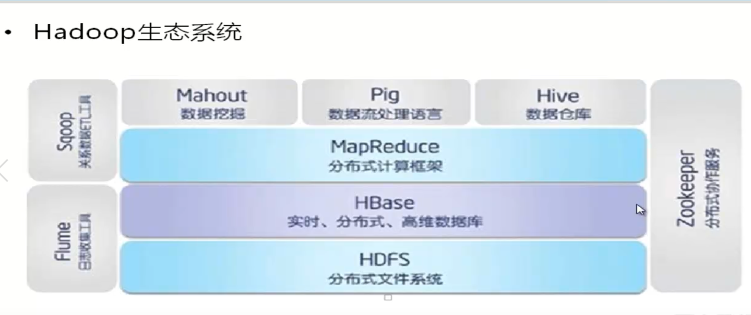
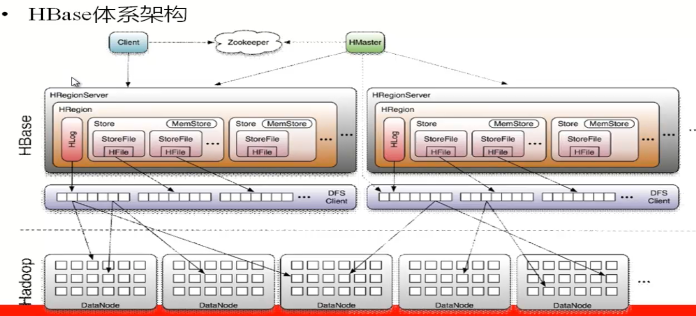
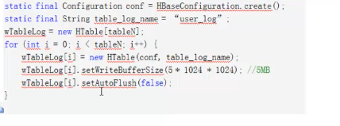
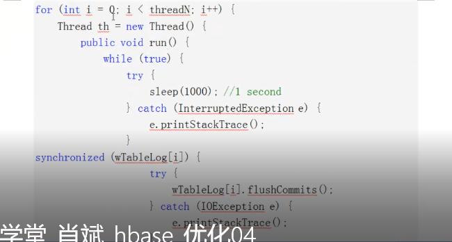
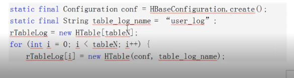
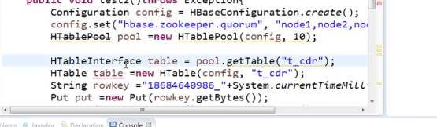

Hadoop系列四：Hadoop生态，包括Hive、HBase
Hive
复习
工具类，没有多少知识点，从local或者hdfs中，将数据load进hive，然后就可以像使用sql一样去查询数据了
需要看Hive_001_Select
简介
- 数据仓库：用类sql来操作hdfs
- 包括：解释器，编译器，优化器等
- 理解：hadoop的客户端，可能先连接hdfs存数据，也可能先连接mr来执行
- hql或者hive sql
Hive:数据仓储
Hive：解释器，编译器，优化器
Hive：运行时，元数据存储在关系型数据库里边。需要安装一个mysql
安装
mysql
yum install mysql -server
service mysqld start
netstart -nplt | grep 3306(mysqld)
mysql中，
grant all privilges on . to root@’node1’ identified by ‘1234’
grant all privilges on . to root@’%’’ identified by ‘123’4
mysql最大的问题是对grant授权后，在centos下执行mysql时，出现的权限问题。
重新赋权限以及密码的修改：
- service mysqld stop
- mysqld_safe –skip-grant-tables
- 重新启动控制台mysql进入
- mysql -u root
use mysql
UPDATE user SET Password=PASSWORD(‘sun12358’) WHERE user=’root’;
flush privileges
\q推出 - 登录：mysql -uroot -psun12358 ，中间有空格会造成失败。
hive安装
- 下载的hive-0.13版本，放在对应的node1的目录下，解压（由于hive是客户端，所以只部署了node1）
- ln -sf /root/hive-0.13 /home/hive-0.13
- 初始化表
- 启动
./hive即可。
服务./hiveserver2（使用./beeline时使用）
语法
DDL
create table
注意array、collection,map等分隔符
以及partitioned by 等应用
load data local inpath ‘/root/data.txt’ into table t_tablename;
DML
与关系型数据库类似
hive服务
简介
HQL脚本有三种运行方式
hive -e ‘hql’
hive -f ‘hql.file’
hive jdbc代码执行脚本hive有2种函数
UDF: 函数的输入数据为一条,输出也为一条,
UDAF: 函数的输入为多行, 输出不限定. count聚合函数, min(col), max(col)
外部链接
- 修改配置文件
1 | <property> |
5000L
启动服务
./hive --service hiveserver2内部连接测试
./beeline
!connect jdbc:hive2://node1:10000
用户名root，密码无
jdbc:hive程序
程序见HiveSelect
将hadoop作为了jdbc，可以用与之前的SpringMVC练习在一起了。
分隔符录入
- 增加jar包
需要在hive下执行：add jar /home/hive-0.13/lib/hive-contrib-0.13.1.jar; - 创建表
1 | CREATE TABLE apachelog ( |
- 原始数据
1 | 0:0:0:0:0:0:0:1 - - [14/Dec/2017:16:12:31 +0800] "POST /Spring_015_Registration_11_i18n/u.action HTTP/1.1" 200 628 |
select count(*) from apachelog where request like '%GET%';
HBase
http://abloz.com/hbase/book.html
复习
- 数据模型，就是NoSQL的模型，rowkey+版本+列族
- HBase的体系结构，有HMaster以及HRegionServer.HRegionServer上有维护者regionHBase的最小单位），region又有多个store组成，store对应着列族，涉及storefile与memfile（内存），应该是memfile溢写到storefile，storefile中的数据是存储在hdfs上的。
- 操作需要看工程baseOperate。报告建表、增删查
hadoop生态系统

- flume:数据收集工具
- sqoop:关系型数据库与hadoop相互导入的工具
- mahout：mapreduce的方法用于数据挖掘。
- hive与HBase区别在于：hive基于mr，而HBase仅依靠hdfs
HBase简介
- mapreduce：离线计算，不支持实时的计算，用于前期的计算
- HBase的实时的：如通话记录，银行账单，社交聊天信息等数据量大，实时在线查询
- HBase是面向列的（NoSQL数据库）数据库【hive也是离线的】
- 利用HDFS作为其文件存储系统，利用MR处理HBase中海量数据，利用Zookeeper作为其分布式协同服务【主要用于ha】
【重点】数据模型（rowkey+版本+列族）
- Row Key相同为一行
- 使用时间戳记录版本，用于克服HDFS不好修改的问题,不同版本的时间戳按倒叙排列
- 列族（Column Family）：记录各个时间的数据
- 每个列都数据列族，列族必须作为表模式定义的一部分预先给出
- 列名以列族作为前缀，每个列族都可以有多个列成员，新的列，可以随时按需动态加入
- 权限控制、存储、调优都是在列族层面进行。
- 同一列族里面的数据存储在同一目录下，由几个文件保存。
- hive优化：reduce数量，count(*),UDF
- Cell
由行和列的坐标交叉决定
单元格有版本
单元格时key:value存储
{rowkey, column(famliy+qualifier),version}确定唯一单元
cell中数据没有类型，全部是字节码存储。 - HLog
记录对HBase读写增删操作的日志
【重点】HBase体系架构（region+store（列族）+storefile）

- 一主（HMaster）多辅(HRegionServer)
- Zookeeper完成对HMaster的HA
- 每个HReigionServer只有一个HLog
- HReigon以RowKey为单位的存储由多个store组成
每个store都是一个列族
store分为memStore(内存中)与storeFile，内存溢写成storeFile
storeFile有HFile的元数据HFile在HDFS上，StoreFile存在HRegionServer上。 - 小文件合并成大文件
- 老版本的数据也会在整理时被删除？
- zookeeper
保存集群中只有一个master
存储所有region的寻址入口
实时监控Region server的上线与下线信息，并实时通知Mater，有问题可以转存到其他Region Server Master【控制节点机】
为RegionServer分配region
负责RegionServer的负载均衡，新增加数据的负载均衡
发现失效的RegionServer并重新分配其上的region
管理用户对table的增删改操作regionServer【任务节点机】
维护region,处理多这些region的IO请求
负责切分运行过程中变大的region
影响HBase的并发
region【分区：一个文件可以有n分区】，是HBase中存储的最小单元
自动把表水平分成多个region，每个表一开始只有一个region，数据增大到阈值，region裂变
当table越来越大，region也越来越多，这两完整的表被保存在多个region上。
HBase实时的实现，是通过用region分割table来实现的。store【列族：目录】
一个region有多个store组成，一个store对应一个列族
store包括内存memstore与磁盘的storefile
当storefile增长到一定阈值，会进行合并（minor，major）进行版本合并和删除工作（majar），形成大的storefile，合并过程很耗内存。为减少合并，表最好不超过3个列族。表就一个列族很好。
客户端检索数据，先找内存memstore
一个目录下可以增加新的文件【列】问题：HRegionServer如何做备份（并发机制）如dataNode
安装
单机
- zookeeper无法安装的问题在于hbase下载的是为haoop1，换成hadoop2版本后可以运行单机
- 修改配置文件
hbase-env.sh中设置JAVA_HOME
hbase-site.xml中设置
1 | <property> |
//注意file是本地，可以写hdfs
1 | <property> |
完全分布式
- 修改hbase-site.xml
1 | <property> |
修该regionservers
增加跑regionserver节点的机器名：node2，node3zookeeper
hbase-env.sh 中HBASE_MANAGES_ZK项设为false（不启动内部的zookeeper）
在hbase-site.xml中配置跑zookeeper的机器，及工作目录
1 | <property> |
hdfs
将hdfs-site.xml放到hbase/conf下一份启动
./start-hbase.sh
在其他机器上./hbase-daemon.sh start master
./hbase hfile -p -f /
存储的是键值对，以列族为单位存储。
安装问题
若master节点与regionserver节点时间差大于3000毫秒，启动失败，需要对时
sudo yum install ntp
systemctl enable ntpd
ntpdate asia.pool.ntp.org：同步时区时间
ntpdate ntp.sjtu.edu.cn
timedatectl
date与timedatectl不一致
访问
HBASE: http://node1:60010
HDFS: http://node1:50070
MR: http://node1:50030
基础操作
create ‘t’,’cf1’
put ‘t’,’001’,’cf1:name’,’zhangsan’(001是rowkey)
scan ‘t’(查看所有)
get ‘t’,’001’
disable ‘t’
drop ‘t’(删除表需要先disable再drop)
优化
表的设计
- pre-create regions预分区
预分区真正解决数据倾斜问题，预先创建一些空的regions，这样当数据写入HBase时，会按照region分区情况，在集群内做数据的负载均衡。
每个分区都可以设置startkey与endkey
尽可能将各个分区的大小均匀 - Row Key
- row key用来检索记录，表的设计关键是row key，支持以下三种方式
通过单个row key
功过row key的range进行扫描
全表扫描 - row key是按照字典排序存储，将经常一起读的数据存存到一起，将最近可能被访问的数据放到一起
- 举例：
如果最近写入HBase表中的数据是最可能被访问的，可以考虑将时间戳作为row key的一部分。由于是字典排序，可以使用long.MAX-VALUE-timestamp作为row key这样能保证写入的数据被快速命中。
- row key用来检索记录，表的设计关键是row key，支持以下三种方式
- Column Family
一张表不能定义太多的CF， - In Memory
创建表的时候可以通过HColumnDescriptor.setInMemory(true)将表放到RegionServer的缓存中，保证在读取表的时候被cache命中。 - Max Version
创建表时，每个列族都可以设置可以通过HColumnDescriptor.setMaxVersions(int maxVersions)设置表中数据最大版本书，如果只需要保存最新版本的数据，可以设置为1 - time To Live
可以功过HColumnDescriptor.setTimeToLive()设置列族中数据的存储生命期，过期数据自动删除。单位是秒。 compact（合并） & split
major compact:
是将所有store file合并成一个，触发可能条件有：major_compact命令,majorCompact()API,regionServer自动运行（默认参数hbase.hregion.majorcompaction默认为24小时）。hbase.hregion.majorcompaction.jetter默认值为0.2，浮动值，为防止在同一时间进行。
一般通过编程控制majorCompacte在空闲时间进行一次，有大量IOminor compact:有以下几个参数共同决定
hbase.hstore.compaction.min：默认为3，表示满足条件的store file数量
hbase.hstore.compaction.max：默认为10，表示一次的选取量
hbase.hstore.compaction.min.size/max.size,文件大小在次之间的文件进行合并。
一般不程序进行控制。
写表操作
多HTable并发写
参数设置
AutoFlush: HTable.setAutoFlush（），如果是自动刷新，每次put就进行一次更新。通过false，将其关闭，通过代码去控制刷新，这样可以批量写入数据到HBase.
write Buffer批量写
HTable.put(list)方法 多线程并发写

读表操作
- 多HTble并发读

setScannerCachineg(50)，欢度
- 参数
- 批量读
多线程并发读
查询缓存
最好在客户端进行缓存，将HBase读出的数据放到redis中
HTable和HTablePool
- HTable和HTablePool是HBase客户端API的一部分，可以使用它们对HBase表进行CRUD操作。
- 就是HTable的池，避免
- HTable之间共享Configuration，所以不是线程安全的。
